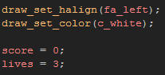
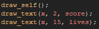
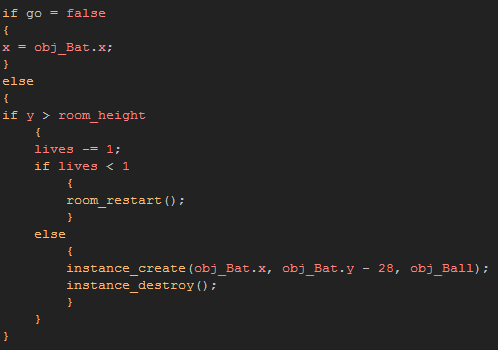
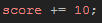

Tutorial
Page 8 of 13
Adding Gameplay
Okay, your breakout game works, but it's not exactly fun, is it? We need to add some game play elements into it now so that your player has a reason to want to continue with it, and the two
most obvious things to add are a score and some some lives.
To start with, create a new sprite and load in the "ScoreBox" from the included resources. Give it a memorable name and set the x origin to 0, and the y origin to the center of the sprite as we
are going to draw this at the top of the screen and this makes positioning easier.
We now need to add this into a new object, so make one and call it "obj_Control" or something similar as this is going to "control" aspects of the game. you want to give it a Create Event
next and add the following code into it:

This code sets up the text alignment and the draw colour (this can be done in any event, but if you do not plan on changing either option, the create event is fine), and resets the global variables
score and lives. These variables are built into Gamemaker and do not belong to any instance or object, but rather to the whole game (hence the name "global"). this means that
any instance can read or write to them, and their value will always be the same for all instances.
We have to add a draw Event now, so that the instance will draw these new variables as well as the score box. In the event add this code:

This code will draw the instance sprite using draw_self() (because when you add a draw event to an instance, GameMaker no longer "defaults" to drawing the assigned sprite as it assumes that
you are going to tell it what to draw) and then draw the score and the lives.
You can close this object for now, and open the Ball object. We are going to change the step event and make it now reduce the lives when it goes out the screen and only restart the game when the last life has been lost.
For that we need to change the code to this:

As you can see, this code is a bit more complex! What it does is when the ball leaves the screen it removes one from the global "lives" variable. It then checks this and if it is not less than one, it creates a new ball
instance over the bat and destroys the current one. However, if the player has 0 lives, the game is restarted.
We should also change the collision event of the ball object too, so that when it destroys a brick we get points. To do this, open up the collision event with the brick object and add in the following line of code:

Close that object and save before continuing.
Click on the Next button to go to the next page of the tutorial.